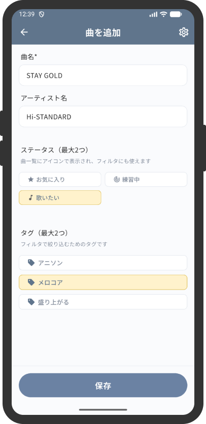
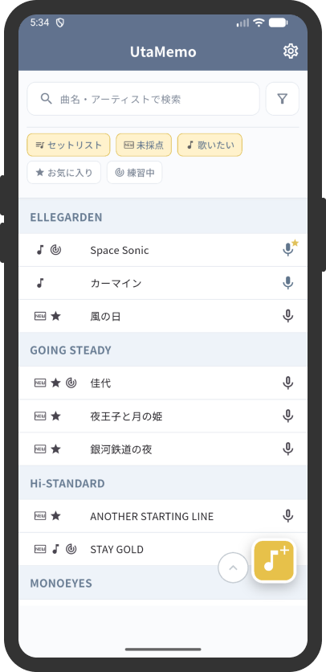
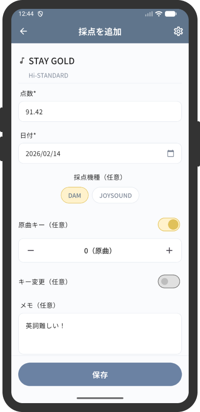
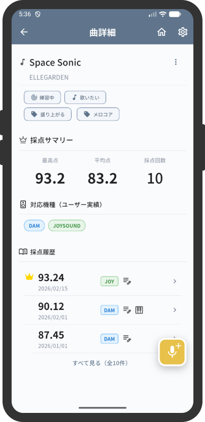
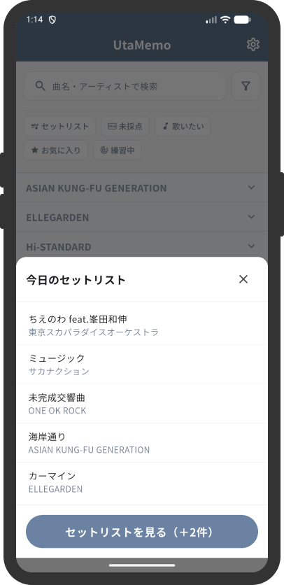

UtaMemoとは
UtaMemo（うためも）は、
カラオケで歌いたい曲や採点結果を
まとめて管理できるアプリです。
「次に何を歌うか迷う時間」を減らし、
カラオケをもっと楽しめます。
主な機能
UtaMemoでは、
カラオケをもっと楽しむための
シンプルな機能を提供しています。
曲を登録
カラオケで歌いたい曲を
忘れないように登録できます。
曲を整理
ステータスやタグで
登録した曲を整理できます。
採点結果を記録
カラオケの採点結果
を記録して振り返れます。
UtaMemoの
使い方
歌いたい曲を登録
ふと思いついた曲や、
次のカラオケで歌いたい曲を
すぐに登録できます。
- 曲名やアーティスト名から曲を検索
- 歌いたい曲をすぐに追加
- 自分だけのセットリストを作成

歌いたい曲を見つける
お気に入り・歌いたい・練習中など
ステータスやタグで曲を整理して
次に歌う曲をすぐ見つけられます。
- ステータスで曲を整理
- タグで自分だけの分類が可能
- 絞り込み検索で曲をすぐ見つけられます

採点結果をかんたん記録
カラオケで歌った後は
採点結果を記録して
スコアや成長を振り返れます。
- 採点結果を簡単に記録
- カラオケ機種・キー・メモも記録
- 最高点にはバッジが付きます

便利な機能
UtaMemoをもっと便利に使うための機能

スコアサマリ
曲ごとの
最高点・平均点・採点回数を
確認できます。

起動時リスト表示
アプリ起動時に歌いたい曲を
すぐ確認できます。